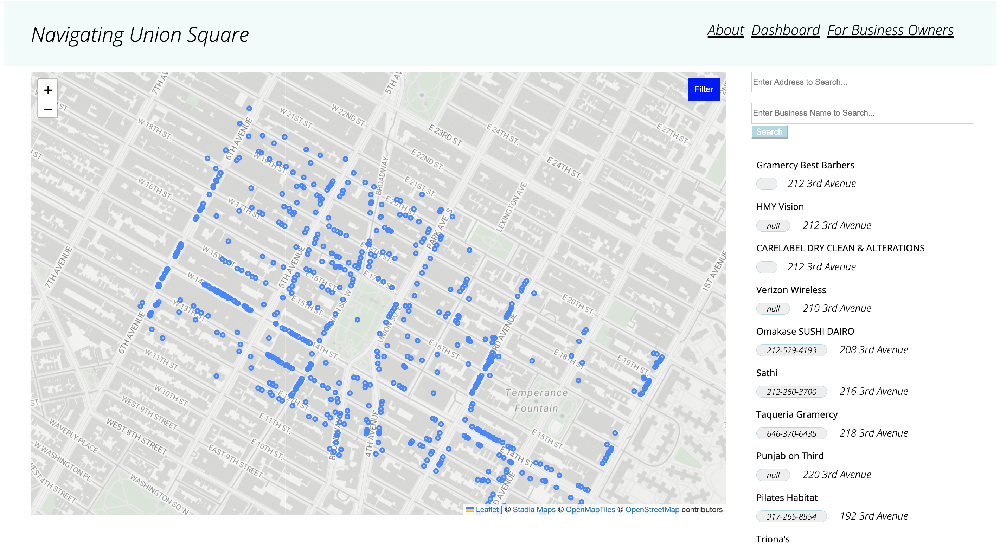
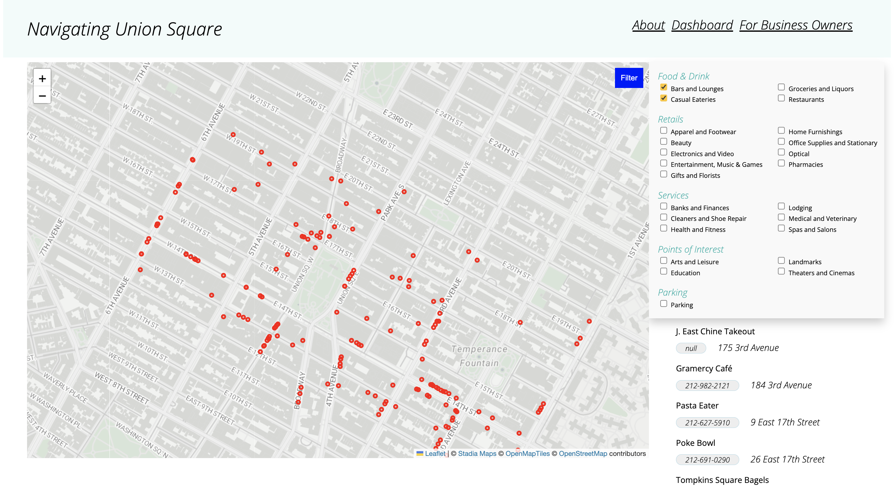

Union Sq. Business Navigation
Demo 1: Dashboard / Navigation app Visitor interface
This dashboard is created as a part of a JavaScript class for planners and spatial analysts. It displays operating businesses at Union Square in Manhattan, New York City. For long, Union Sq. has an importance in NYC, both in terms of its central geography and vibrant commercial activities. The dashboard opens to both visitors and business owners, with the objective of bridging the two groups for prosperities. The visitors can apply filters to check their desired type of business, or search through the address / businesss entry search bar. Business owners will get a chance to upload introductory or promotional messages, which will show up to visitors when they click on specific business.
The main motivation behiind this dashboard / navigation app is to prototype a potential channel for promotion and outreach of Business Improvement Districts acorss the country and the world. BID's would have the incentives and resources to promote the local business. And once the template is setup, they only need to have regular maintanence and update the operating businesses.
Looking into the future:
As mentioned above, the operational cost may be a burden for BID, especially when they are just starting. Yet in long term, I believe
it is meaningful and helpful for local businesses who doesn't have enough resources for online marketing to have a platform to communicate directly
to the visitors and potential customers for free.
Demo 2: Interface when applying filters.
